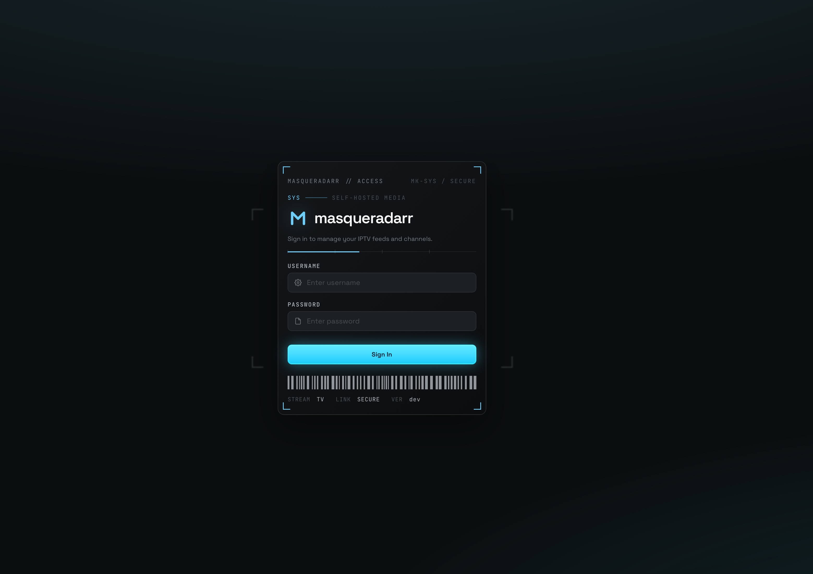

One identity, two tokens
masqueradarr has real authentication — scrypt users, two roles, and a per-user access list. The trick that makes tokenized playlists work is a deliberate split between a session token and a stream token.
scrypt, and a first-admin wizard
On first launch there are no users — the app reports needsSetup and the SPA walks you through creating the first admin. Passwords are hashed with scrypt; masqueradarr never stores a plaintext password (and for authenticated sources like dulo, your provider password goes straight to the provider — only session tokens are kept).

A role, and a per-user allow-list on top
What an account can do is governed by two layers working together.
admin vs. user
An admin sees and manages everything (all screens). A user is restricted to their Dashboard and only ever sees their own assigned channels. The role decides which screens and nav items appear at login.
allowedPlaylists · allowedCustomPlaylists
Even within the user role, each account is granted specific playlists — split to mirror the endpoint modes (Global vs Custom). Two users can have completely different line-ups. You assign this on the Playlists screen, per playlist.
An admin's allow-lists are materialized to hold every playlist id (a real invariant, not just a role bypass), and creating a new playlist auto-grants it to all admins — so an admin always sees the full catalog without any manual grant.
Session token vs. stream token
The split is what lets a playlist download without a login yet stream only for its owner.
Signing in & the API
Issued at login; carried by the SPA to authenticate /api/* calls. It identifies who is using the management app and expires like a normal session.
Gating playback
A durable, per-user token baked into that user's integration URLs. The playlist .m3u + XMLTV guide download is token-free, but every stream request is token-gated to that user's allowed playlists.
- The stream gate runs on every play. Valid token? account enabled? (for a non-admin) is this source in the user's allow-list? Denials come back as plain text so a media player surfaces them.
- Regenerate invalidates instantly. If a user shares their links by accident, Regenerate (on their Dashboard, or by an admin on the Users screen) rotates the stream token — old URLs stop working immediately; they copy the new ones.
- Granting is what makes an account work. A standard user with nothing granted sees an empty Dashboard, gets a channel-less M3U, and can't stream anything.
One URL into any IPTV player
Each user gets a personal, tokenized .m3u + XMLTV guide URL on their Dashboard. Copy the M3U into any player; it loads the channel list automatically, and the guide is advertised alongside via x-tvg-url.
Playlist + EPG
Add a playlist → M3U URL, paste the tokenized .m3u. TiviMate picks up the guide automatically from the advertised x-tvg-url.
Open network stream
Open the .m3u URL directly — a quick way to sanity-check a channel plays.
Live TV & DVR
Point the Live TV / tuner integration at the M3U URL and the XMLTV guide URL. (HDHomeRun-tuner emulation is on the roadmap.)
A standard user doesn't need an external app to check a channel — the Dashboard has a built-in preview player beside the channel list, playing the same proxied HLS stream an external client would get.
Two modals, one per playlist row
You grant and you share from the same place — a playlist's row menu on the Playlists screen — rather than editing a user's list of playlist ids.
Assign access
A searchable checklist of every user against this playlist — tick to grant, untick to revoke. Admins appear already granted and locked, because an admin always holds every playlist.
Opened on the Global row it grants the whole Global union instead: the same cross-access across every Global-endpoint playlist at once.
Get access
The mirror image — a dense table of every user's published URLs for this playlist: their personal .m3u and XMLTV guide links, ready to copy and hand over. On the Global row it lists the shared Global URLs.
The same URLs are rendered as grouped Published URLs cards — one card per playlist, each with an M3U row and an EPG / Guide row, both with a copy button. A user sees them on their own Dashboard; an admin sees the header-only version inside Users → Edit → Playlist Access, which doubles as a read-out of exactly what that account holds.